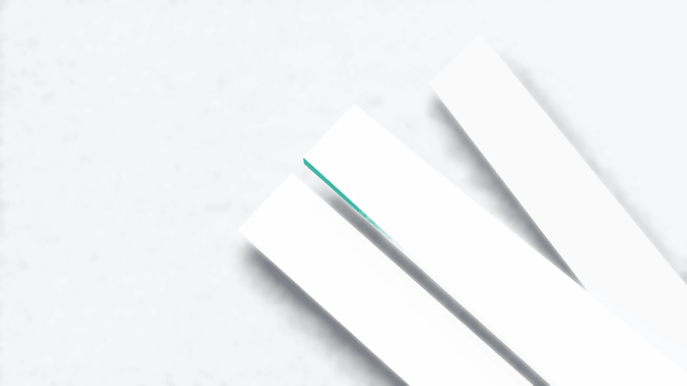
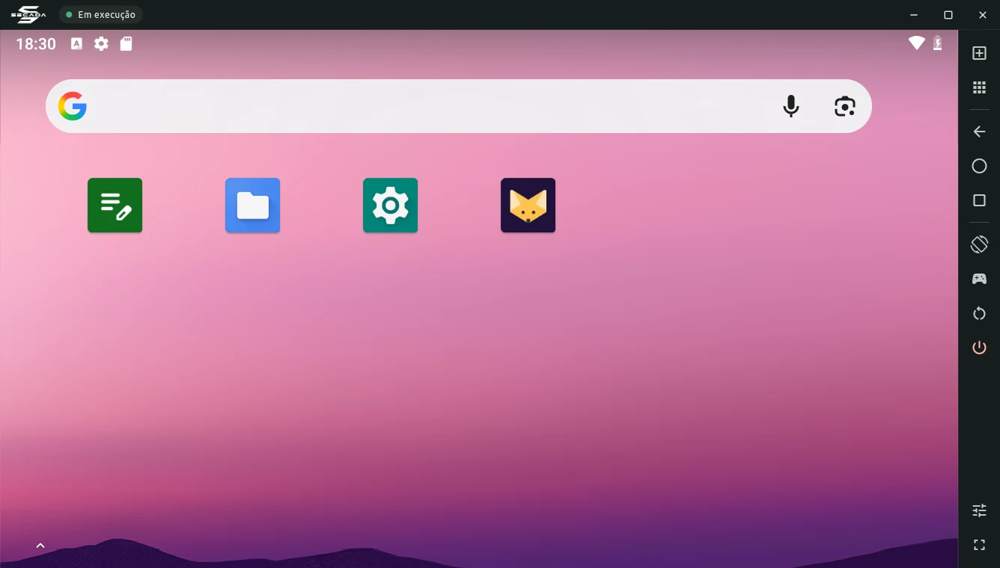

Android numa janela do seu Linux.
Roda o Android 9 em uma máquina virtual e mostra a tela numa janela nativa. Mouse, teclado e APK com dois cliques.

Recursos
Android em janela
Android 9 em VM com KVM e GPU do computador, em tela cheia ou redimensionável.
APK com dois cliques
Instale APK e XAPK pelo gerenciador de arquivos ou arrastando para a janela.
Mouse e teclado
Funcionam como em qualquer programa. Esc volta, F11 abre a tela cheia.
Mapeador de teclas
Transforme teclado e mouse em toques para jogar, com perfis e editor visual.
Apps ARM de 32 bits
Uma tradução opcional roda apps feitos só para celulares ARM.
Integrado ao desktop
Abre .apk e .xapk, mostra a bateria e usa o idioma e o áudio do computador.
O SECADA roda Android 9, sem câmera, sensores nem Google Play. Ver limitações e o que vem a seguir.
Baixar
Versão 0.1.0 Beta · 15 de outubro de 2026
Na primeira abertura, o SECADA baixa a imagem do Android (921 MB). Veja todas as opções e a instalação.
Verificar integridade (SHA-256)
- secada-0.1.0-linux-x86_64.tar.gz
771012e04b32571de1bb6e6108e3f4b53820ad0eef08e4c5dc845e6fab2af537- secada_0.1.0_amd64.deb
21102971b7067986d80546807b52327faf70a6b723ac5a57fe33353f1a7c1a47
Apoie o projeto
O SECADA é gratuito. Se ele for útil para você, uma contribuição ajuda a manter o desenvolvimento. É opcional.